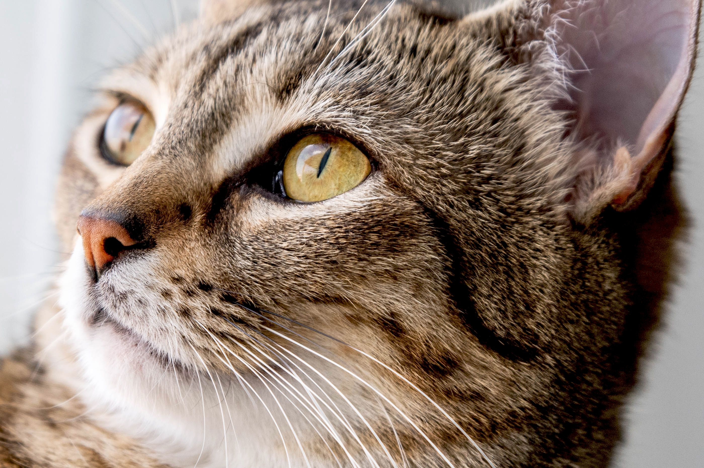

Кошачье национальное государство
О нас
Кошачье национальное государство - уникальное место, где кошки владеют всем, от правления до законов. У них есть свои города с комфортом и безопасностью, а также культурные мероприятия. Это демонстрирует, как животные могут существовать независимо и в гармонии с природой.
Форма правления:
Федеративная президентская республика
Продолжительность существования:
Основано в далеком 3000 году до нашей эры, когда кошачьи мудрые предводители решили объединиться и создать свою собственную цивилизацию
ВВП страны:
23.32 trillion USD в 2021
Знаменитые граждане КНГ
